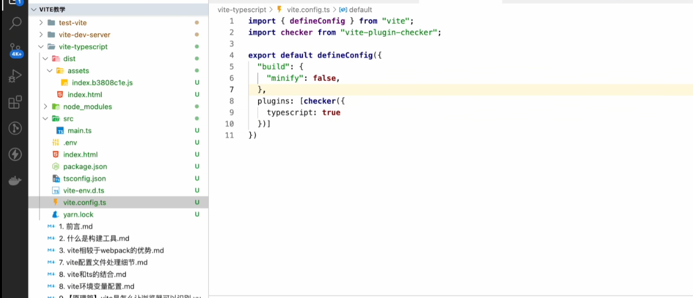
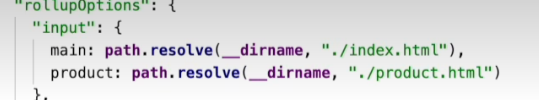
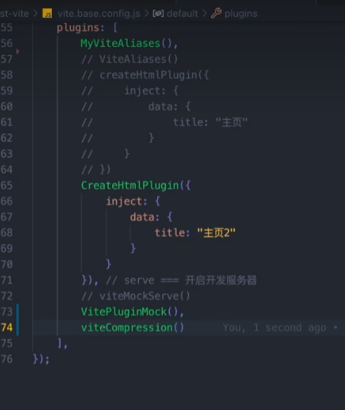
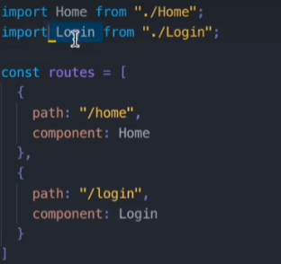
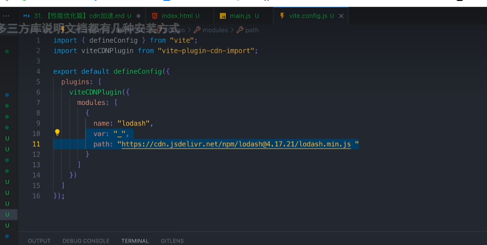

开发时态构建优化（开发时）
vite 是按需加载，不太需要这方面的优化
传输优化（生产运行时）
tree shaking
split chunk(代码分割)
好处：
1.减少初始加载时间
2.按需加载
3.并行加载
4.缓存利用
默认行为：异步导入的 js 和 css 会单独成一个模块，当要用到的时候引入
build: {
rollupOptions: {
output: {
manualChunks: {
vue: ['vue'],
'vue-router': ['vue-router'],
'element-plus': ['element-plus']
}
}
},
outDir: "dist/client",
chunkSizeWarningLimit: 1000,
},
代码压缩
yarn add terser
vite 配置
minify: 'terser',
terserOptions: {
compress: {
drop_console: viteEnv.VITE_DROP_CONSOLE,
drop_debugger: viteEnv.VITE_DROP_CONSOLE,
}
}
分包策略
build 里配置，可以使得 build 打包不乱码

因为浏览器有缓存，将第三方模块单独打包成一个 js 可以利用缓存，因为第三方模块不会变
build: {
rollupOptions: {
output: {
manualChunks: {
vue: ['vue'],
'vue-router': ['vue-router'],
'element-plus': ['element-plus']
}
}
},
outDir: "dist/client",
chunkSizeWarningLimit: 1000,
},
配置多入口

gzip 压缩

动态导入（懒加载）
vite 是按需加载，先加载 main.js 然后再根据 main.js 要引入的文件再去加载
动态导入和按需加载有异曲同工之妙
采用 import(xxx)的语法
采用动态导入会导致打包结果分包（代码分割）
应用
可以用在 vue-router 里，路由组件可以用到再去加载
无动态导入

假如这样，那么当这个模块被加载的时候，Home 和 Login 都会被加载（读整个文件）
但如果采用动态导入（懒加载），那么只会在切换到那个页面的时候才会加载
原理
function import(path){
return new Promise((resolve)=>{
//vite用的es原生的动态导入
//不让他进入fulfilled状态
//进入到对应路由时将webpack_require.e这个promoise的状态设置为fulfilled(调用resolve)
//如果没进入过懒加载的页面，就让webpack_require.e永远悬停在(pending状态)
//创造一个promise.all 创建script标签，src指向懒加载进来的这个文件，然后把他放入html的body中
webpack_require.e().then(()=>{
const result = await webpakc_require(path)
})
})
}
cdn 加速
cdn 的第三方模块会根据你的网络给你提供最近的，最快的第三方服务器

原理
1.会把你配置的 cdn 插入到 html 中
2.会根据这个配置去修改 rollup 的配置（影响 rollup 配置）
图片压缩
yarn vite-plugin-imagemin -D
viteImagemin({
gifsicle: {
optimizationLevel: 7,
interlaced: false,
},
optipng: {
optimizationLevel: 7,
},
mozjpeg: {
quality: 20,
},
pngquant: {
quality: [0.8, 0.9],
speed: 4,
},
svgo: {
plugins: [
{
name: "removeViewBox",
},
{
name: "removeEmptyAttrs",
active: false,
},
],
},
});
分析插件
rollup-plugin-visualizer
分析依赖模块的大小占比，可以让我们更有针对性的进行体积优化
构建成功之后会在根目录下生成一个 stats.html
import { visualizer } from "rollup-plugin-visualizer";
plugins: [
visualizer({
open: true,
}),
],
vite-plugin-inspect
用来分析各文件的编译结果
可以在 http://localhost:5173/__inspect/ 里面看到每一个组件编译后的结果。
// vite.config.js
import Inspect from "vite-plugin-inspect";
export default {
plugins: [Inspect()],
};